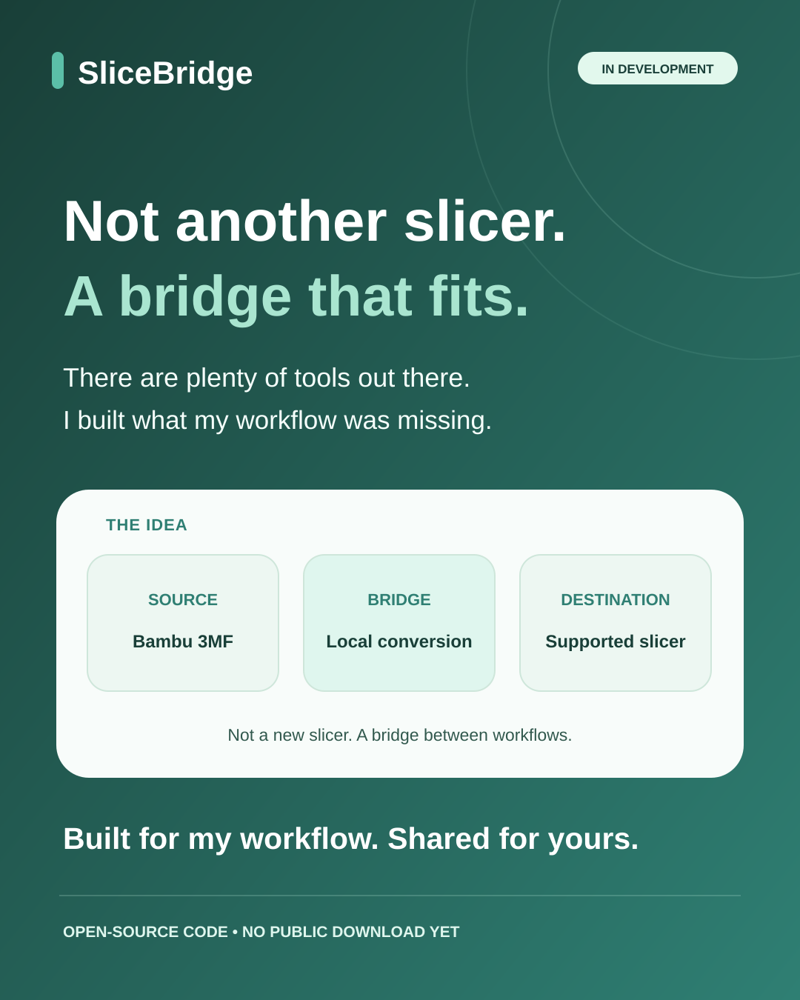
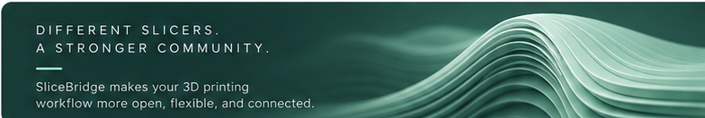
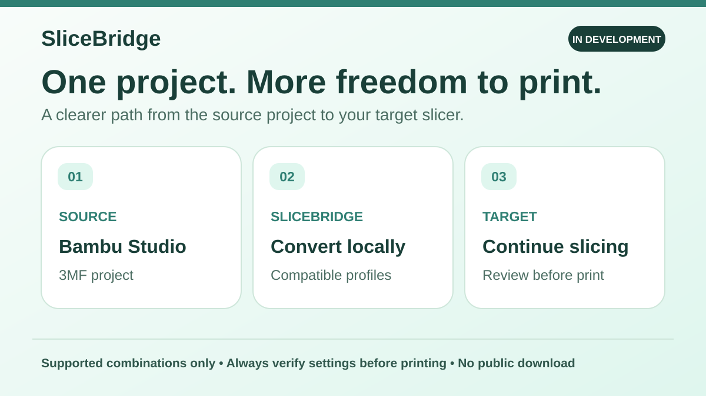
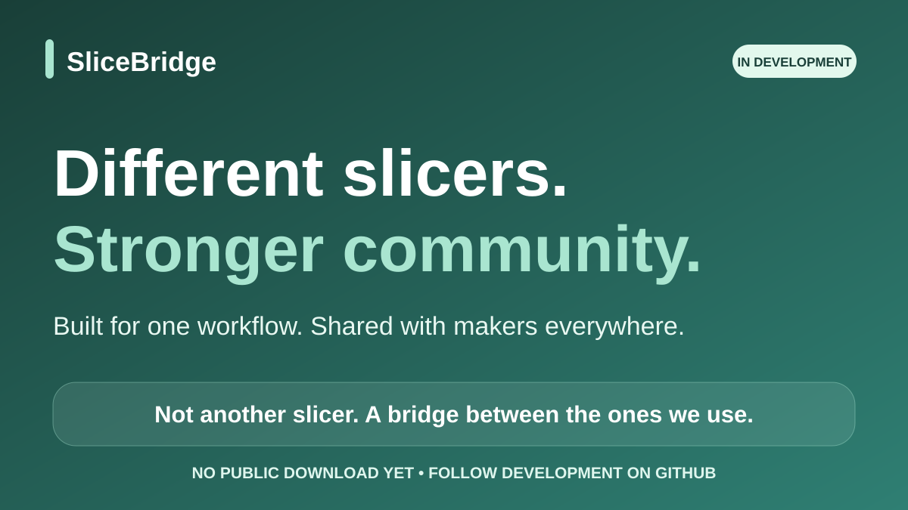
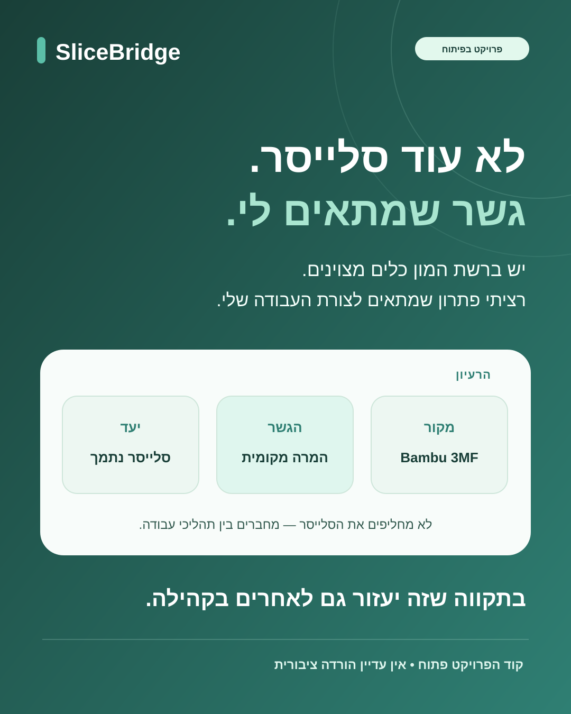
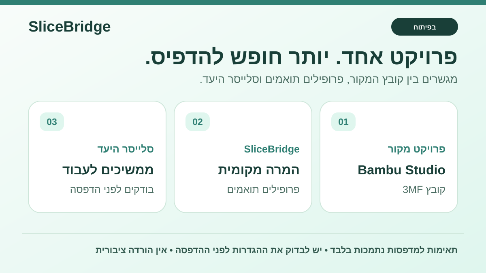
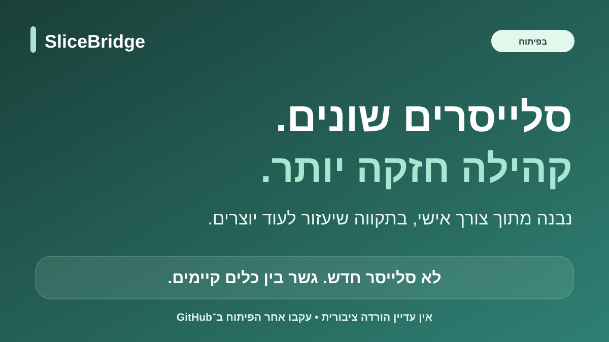

The maker story
1080 × 1350 · personal announcement
SVG artwork ↗Approved identity and bilingual graphics for people following SliceBridge. Built from a maker's own workflow needs, with the hope of helping others in the community.
המיתוג המאושר וחומרי שיתוף בעברית ובאנגלית עבור מי שעוקב אחרי SliceBridge. כלי שנבנה מתוך צורך בעבודה האישית, בתקווה שיסייע גם לאחרים בקהילה.

Original approved artwork, preserved pixel-for-pixel. Only the displayed corners are rounded.
חומרי המותג המאושרים נשמרו ללא שינוי; רק פינות התצוגה מעוגלות.

1080 × 1350 · personal announcement
SVG artwork ↗
1200 × 675 · development-stage workflow
SVG artwork ↗
1200 × 675 · community share card
SVG artwork ↗
1080 × 1350 · פוסט אישי
קובץ SVG ↗
1200 × 675 · תהליך העבודה המתוכנן
קובץ SVG ↗
1200 × 675 · כרטיס לשיתוף בקהילה
קובץ SVG ↗There are plenty of 3D-printing tools out there. I wanted something that fit my own workflow, so I started building SliceBridge. It's still in development, and I hope it can help other makers too.
יש ברשת המון כלים ופתרונות להדפסת תלת־ממד. רציתי משהו שמתאים יותר לצורת העבודה שלי, אז התחלתי לבנות את SliceBridge. הפרויקט עדיין בפיתוח, ובתקווה יעזור בהמשך גם לאחרים בקהילה.